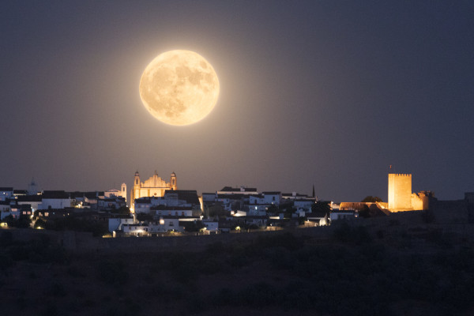
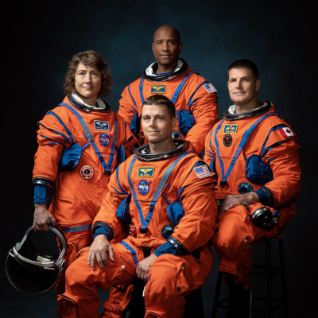

A Supermoon occurs when a full moon occurs at the same time as when the moon's perigree or orbit is at its closest to earth. This causes the full moon to appear up to 30 percent brighter and 14 percent larger than a regular full moon. The next Supermoon of this year is predicted to occur on September 29 and it will be the last of four this year. 
There will be four astronauts on the Artemis II Mission: NASA astronauts Reid Wiseman, Victor Glover, and Christina Hammock Koch, and CSA astronaut Jeremy Hansen.The approximately 10-day Artemis II flight test will launch on the agency’s powerful Space Launch System rocket, prove the Orion spacecraft’s life-support systems, and validate the capabilities and techniques needed for humans to live and work in deep space. Artemis II will set the stage for the first woman and first person of color on the Moon through the Artemis program, paving the way for future for long-term human exploration missions to the Moon, and eventually Mars. 